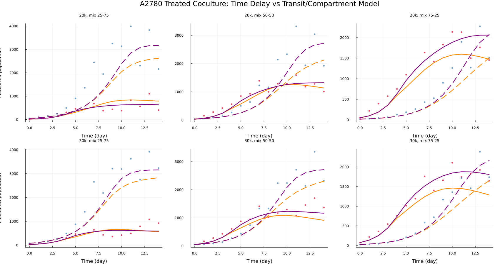
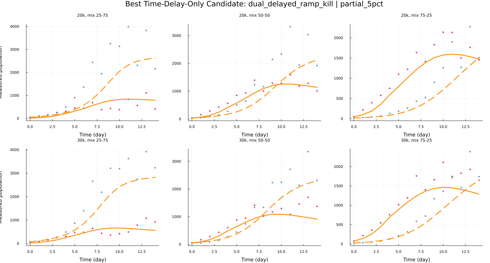
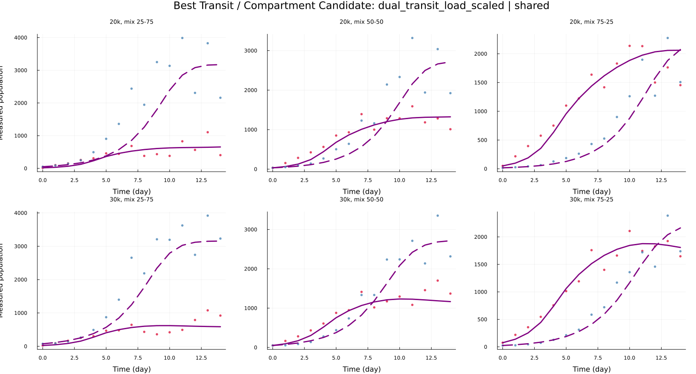

Direct Overlay Comparison
The best time-delay-only fit and the best transit/compartment fit are overlaid on the same treated-coculture data panels. Data are red/blue by lineage component; model colors identify the candidate mechanism.



How The Math Builds Up
These sections show the inherited equations stage by stage. The important idea is that the treated coculture candidates do not start from scratch: they inherit baseline growth, drug timing, and untreated competition structure, then test whether the treated hump is better explained by time activation alone or by a damaged-visible compartment.
Stage 1: Untreated Monoculture Growth
Question: how does each cell line grow when it is alone and untreated?
Inherited object: each lineage gets its own growth law, written as G_N for A2780Naive and G_C for A2780cis.
Meaning: r_i controls early growth, K_i is the carrying capacity, and theta_i controls how sharply growth slows as the population approaches carrying capacity.
Stage 2: Treated Monoculture Timing
Question: does cisplatin killing act immediately, gradually, after an onset, or through a visible-damage delay?
Inherited object: the drug-response strength H_i(z) and time-activation term A_i(t).
Meaning: H_i(z) is the dose effect, while A_i(t) lets the effect turn on over time. A rising A_i(t) can produce early growth followed by later decline without adding a new visible compartment.
Stage 3: Untreated Coculture Competition
Question: how do Naive and cis cells alter each other's growth when mixed without drug?
Inherited object: effective-load variables and competition coefficients.
Meaning: each lineage grows according to its own Stage-1 growth law, but growth is limited by effective coculture load. If cis cells decline, L_N falls and Naive cells can experience less competition.
Stage 4A: Time-Delay-Only Treated Coculture Candidate
Question: can inherited growth, inherited competition, and a time-delayed drug effect explain the treated coculture data without a damaged-visible compartment?
Best candidate here: dual_delayed_ramp_kill | partial_5pct.
Meaning: the only special treated behavior is that drug killing is time-activated. The visible population is still modeled directly, so the hump must come from growth winning early and drug effect winning later.
Stage 4B: Transit / Compartment Treated Coculture Candidate
Question: does the data prefer a visible-damage compartment, where cells are injured before disappearing from the measured population?
Best candidate here: dual_transit_load_scaled | shared.
Meaning: cells can stop proliferating or become drug-damaged before they are cleared from the measurement. The observed hump can therefore reflect delayed disappearance, not just delayed death onset.
Identifiability And Global Search
Identifiability matrix idea: build a parameter-by-parameter view of whether two parameters can trade off while producing nearly the same fitted curves.
Meaning: correlations near +1 or -1 mean two parameters are hard to distinguish. A near-singular matrix or broad profile likelihood means the data do not uniquely identify that mechanism.
Global search idea: yes, it makes sense to run broader multistart or global searches for these candidate models. Delay onset, ramp speed, kill strength, clearance, and load scaling can form ridges where several parameter combinations produce similar hump-shaped trajectories.
Model Summary
| Comparison | Model | Pooling | BIC | Delta BIC | Parameters |
|---|---|---|---|---|---|
| Best Time-Delay-Only Candidate | dual_delayed_ramp_kill |
partial_5pct |
-552.229 | NA | missing |
| Best Transit / Compartment Candidate | dual_transit_load_scaled |
shared |
-617.782 | NA | missing |
Best Time-Delay-Only Candidate
Model: dual_delayed_ramp_kill | Pooling: partial_5pct
Mechanism: Delayed ramp kill: drug pressure turns on over time, without adding a damaged-visible compartment.
Best Transit / Compartment Candidate
Model: dual_transit_load_scaled | Pooling: shared
Mechanism: Transit damage with load scaling: cells move through a damaged-visible state before clearance, and drug damage is scaled by effective load.